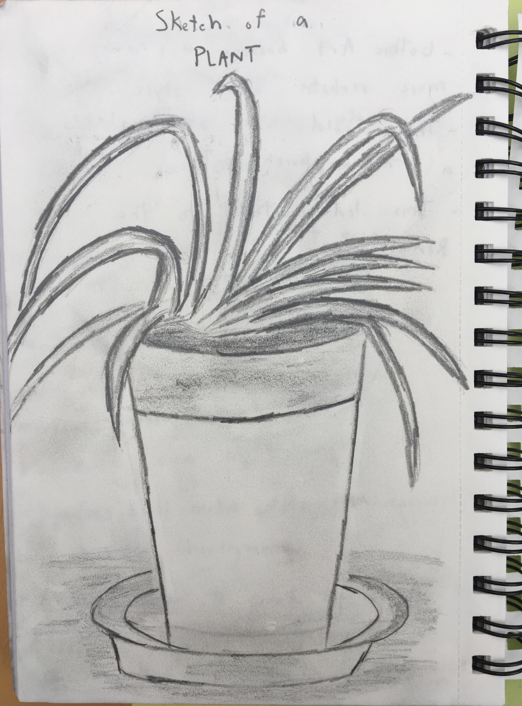
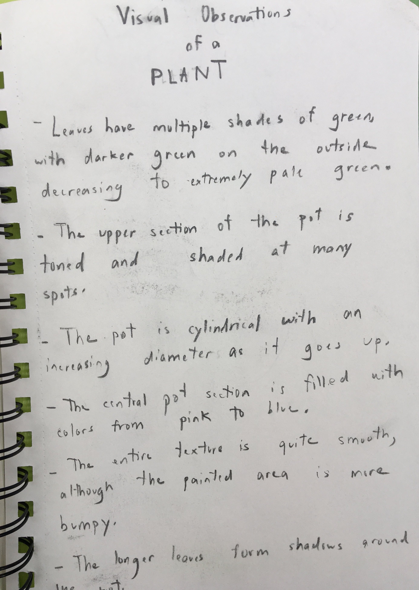

Cycle 3 Sketches
 
Mediums: 0.7 mm Mechanical Pencil, Sketchbook Paper
We studied sketching throughout this cycle, and these were some of the first drawings which we did. We had to choose a stationary object and display many of its characteristics, such as its shadows, as well as its details. My sketch was black-and-white, which allowed me to work much more on my shading given that I only had two colors. I sketched a houseplant, which, with its many color values and shapes, was challenging but fun to draw. The first image shows my sketch, while my second image shows my notes on the various features of the plant which I was sketching.